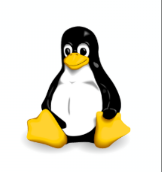

Du plus bas rang social à la présidence
Il est né dans un coin reculé, au plus bas de l'échelle sociale, dans une famille modeste sans richesse ni influence.
Dès son plus jeune âge, il a connu les difficultés, les injustices, et le poids d'un système qui semblait vouloir le maintenir dans l'ombre.
Pourtant, au fond de lui brûlait une flamme indomptable : celle de la liberté, de la justice, et de la dignité humaine.
À travers les années, il a affronté des épreuves que peu pourraient supporter.
Emprisonné pendant près de trois décennies, coupé de sa famille, isolé du monde, il aurait pu céder au désespoir.
Mais il a choisi la patience, la sagesse et la persévérance.
Dans cette obscurité, il a cultivé la force intérieure qui allait un jour illuminer toute une nation.
Libéré, il est devenu un symbole vivant d'espoir et de réconciliation.
Plutôt que de chercher la vengeance, il a tendu la main, rassemblant ceux qui étaient divisés par la peur et la haine.
Son ascension, du plus humble des commencements à la plus haute fonction de son pays, est une leçon universelle : peu importe d'où l'on vient, la grandeur est possible lorsque le cœur est guidé par la justice et l'amour.
Cet homme, Nelson Mandela, est aujourd'hui gravé dans l'histoire comme celui qui a su transformer la douleur en lumière, et l'oppression en liberté.
En hommage à Nelson Mandela et aux valeurs qu'il incarnait, la communauté Linux a choisi de baptiser l'une de ses distributions les plus emblématiques « Ubuntu ».
Ce choix n'est pas anodin : Ubuntu, terme d'origine bantoue, signifie « Je suis parce que nous sommes » — une philosophie profondément ancrée dans la solidarité, le partage et le respect mutuel.
Cette distribution Linux libre et accessible incarne parfaitement l'esprit mandélien : créer un monde connecté où chacun peut contribuer et bénéficier du progrès commun, sans distinction ni barrière.
Ubuntu représente ainsi un vibrant hommage à la vision de Mandela : unir les différences, valoriser la communauté et avancer ensemble vers la lumière.
L'ascension de Nelson Mandela, de l'ombre vers la lumière, continue d'inspirer bien au-delà des frontières politiques.
Son parcours nous rappelle la puissance de la résilience et l'importance de construire un monde plus juste et plus humain, où chaque voix compte.
Dans l'univers numérique, Ubuntu perpétue cet idéal : offrir à tous un système d'exploitation libre, performant et respectueux de nos données personnelles.
Si vous ressentez les limites de votre système actuel — lenteurs persistantes, mises à jour interminables, failles de sécurité récurrentes — Ubuntu représente une alternative mature et fiable.
Ce système d'exploitation, inspiré par l'esprit d'entraide et de liberté cher à Mandela, vous offre :
Certes, Ubuntu n'est pas infaillible et peut dérouter au début. Mais comme toute découverte enrichissante, elle mérite qu'on lui accorde le temps de l'apprivoisement.
Essayer Ubuntu, c'est faire l'expérience d'un ordinateur plus rapide, plus sûr, et surtout plus libre.
C'est également rejoindre une communauté mondiale unie par les valeurs de partage et d'entraide.
Comme le rappelle si justement la philosophie Ubuntu : « Je suis parce que nous sommes » — une vérité qui résonne aujourd'hui plus que jamais dans notre monde interconnecté.
Présentation complète et guides détaillés en français
Aide en ligne gratuite par la communauté francophone
Tutorial d'installation en dual-boot
Guide pas-à-pas pour conserver Windows en parallèle
Découverte pratique du processus d'installation
Méthode alternative d'installation
